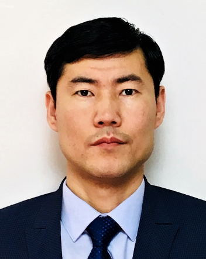

Head of Subtask RP-3. He is engaged in computer modeling of energy systems, predicting industrial greenhouse gas emissions, and climate change mitigation analytics. His main research topic is mathematical and computer modeling of physical processes, optimization and matrix algebra methods, and modeling in the GAMS environment. h-index=4, https://www.scopus.com/authid/detail.uri?authorId=56043145000 https://www.scopus.com/authid/detail.uri?authorId=56043145000') }}
Zhakiev Nurkhat
Head of Subtask RP-3. He is engaged in computer modeling of energy systems, predicting industrial greenhouse gas emissions, and climate change mitigation analytics. His main research topic is mathematical and computer modeling of physical processes, optimization and matrix algebra methods, and modeling in the GAMS environment. h-index=4, https://www.scopus.com/authid/detail.uri?authorId=56043145000 https://www.scopus.com/authid/detail.uri?authorId=56043145000') }}

Toksanov Sapar
MA in Computer Science, PhD, AITU Fellow h-index=2 https://www.scopus.com/authid/detail.uri?authorId=57222154960') }}
Ayagoz Hamzina
Khamzina Ayagoz Saktagankyzy was born in 1994, November 25 (25.11.1994) in Uralsk, Kazakhstan. В in 2012 she graduated from secondary general school № 2 and entered the Kazakh National University on a specialty "chemist-technologist". In 2016 she received a master's degree in technical sciences. She began her career as a student as a junior researcher at the Research Institute of combustion problems. In the course of her scientific activities she improved the technology of obtaining environmental water-soluble polyurethane paints. In 2017, she completed an internship at the Łódź Polytechnic University of Lodz, Poland. In 2018, she participated in a conference on sustainable development, organized by the UN at its headquarters in New York. Practiced at leading companies involved in oil refining, such as Karachaganak Petroleum Operated, Atyrau Oil Refinery. At she is currently a junior researcher in the Department of Science and Innovation at AITU.
Kenzhina Madina
A graduate of Electrical and electronic engineering undergraduate program Nazarbayev University 2019, specialization in Power Engineering. She has several publications, dedicated to the study of the reliable operation of the power system, the feasibility of implementing a virtual power plant in Kazakhstan. Currently the leading engineer of KEGOC JSC. Business profile: operation of active-adaptive systems of the Unified Energy System of Kazakhstan (ARCHM, WAMS, etc.).

Oleg Arkhipkin
Education: Moscow Institute of Physics and Technology 2002 - 2008, Master of Applied Physics and Mathematics, member of the Coordinating Council for Renewable Energy Development of the Ministry of Energy of the Republic of Kazakhstan (Order of the Minister of Energy of the Republic of Kazakhstan № 304 of 07.07.2016); member of the KAZENERGY Association Energy Council. Years at the Firm: 01/2021 - present - Zhasyl Damu JSC, 11/2019 - 08/2020 - ICZTIP NJSC, 07/2011 - 07/2019 - Kazakh Institute of Oil and Gas JSC, 07/2010 - 01/2011 - Speclabpribor A LLP, 04/2009 - 04/2010 - NAC Kazatomprom JSC, Awards: Medal of KAZENERGY Association for contribution to the development of the oil and energy sector of Kazakhstan. The Best Innovation Expert of 2012

Balzhan Azibek
Balzhan Azibek received the B.Sc. degree and M.Sc. degree in Electrical and Computer Engineering at Nazarbayev University, Kazakhstan. In B.Sc. shestudied the power generaton and distribution. She mastered her research skills in higher education. Her research area includes game theory approaches in power system modeling. Currently, she works as a teacher at Astana IT University, Kazakhstan.

Aidos Satan
Was born on May 18, 1999 in Kazakhstan, city Shymkent. He has attained Bachelor’s degree in Electrical and Electronic Engineering at Nazarbayev University. Currently, he is Master’s degree Energy Engineering student at University of Genova and works as a Junior Researcher at Astana IT University.

Nurlan Zhanserik
Education: doctoral studies at ENU. L.N. GUMILEV Head of Laboratory FabLab / Junior Research Fellow of the Scientific Research Center "Industry 4.0" Senior Research Fellow of the PCF "Development of intelligent information and telecommunication systems for urban infrastructure: transport, ecology, energy and data analytics in the Smart City concept" 2021-2023, in the section "IT for optimizing the heat and power system". Researcher at the Research Center "Industry 4.0". Member of the Industry Center for Technological Competence "E-Industry". Member of the Research Center "Samsung Research" in the field of 5G and 6G. Years with the Firm: 09/2022 - present - Astana IT University (AITU)